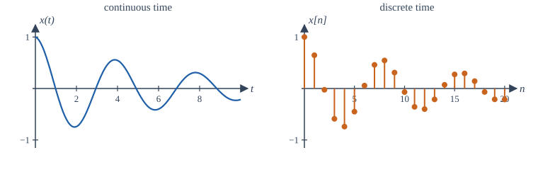
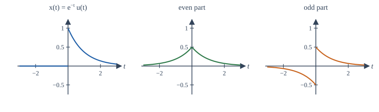
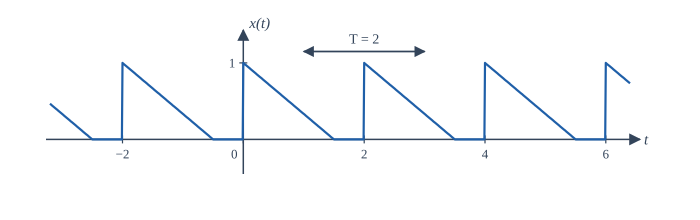

Chapter 1: Signals and Their Classification¶
What a signal is, and the handful of questions that sort every signal into families
Learning outcomes
After this chapter you should be able to:
- describe a signal as a function of an independent variable and tell continuous-time from discrete-time signals;
- use complex numbers and Euler's formula confidently, because every later chapter depends on them;
- split any signal into its even and odd parts;
- decide whether a continuous-time or discrete-time signal is periodic and find its fundamental period;
- compute the energy and the average power of a signal and say whether it is an energy signal, a power signal or neither.
1.1 Signals and systems in everyday engineering¶
A signal is a quantity that varies and carries information. The voltage from a microphone rises and falls with the pressure of the air in front of it; the reading of a thermometer changes through the day; the brightness of a pixel changes from one point of an image to the next; the closing price of a share changes from one trading day to the next. In each case there is something we can measure, and it changes with something else: with time, with position, with the day number.
Mathematically, a signal is simply a function. The thing it depends on is called the independent variable, and the value it takes is the amplitude or the value of the signal. Most of this book uses time as the independent variable, so we write \(x(t)\) for a signal that depends on a continuous time \(t\), and \(x[n]\) for one that is defined only at whole numbers \(n\). Nothing in the mathematics requires the variable to be time: an image is a signal of two spatial variables, and the same ideas of filtering and frequency apply to it.
A system is anything that takes a signal in and produces a signal out. An amplifier takes a weak microphone voltage and produces a stronger copy of it. A car's suspension takes the bumps of the road as its input and produces the motion of the cabin as its output. A program that averages the last five daily share prices is a system whose input and output are both sequences of numbers. We draw a system as a box with an arrow going in and an arrow coming out, and we write \(y(t) = T\{x(t)\}\) to say that the system \(T\) turns the input \(x\) into the output \(y\).
The subject of this book is the relationship between signals and the systems that process them. Three questions recur in every chapter:
- Description. How do we describe a signal compactly and usefully? Sometimes as a formula in time, often as a sum of sinusoids of different frequencies.
- Analysis. Given a system and an input, what is the output? For the important class of linear time-invariant systems there is a complete answer, called convolution, and a simpler one in the frequency domain.
- Design. Given what we want the output to look like, how do we build the system? This is the problem of filter and controller design.
This first chapter is about the vocabulary of signals: the families they fall into and the numbers (period, energy, power) that summarise them. The next chapter adds the basic signals from which all others are built and the operations we perform on them.
1.2 Continuous-time and discrete-time signals¶
A continuous-time (CT) signal is defined for every real value of time. The voltage across a capacitor, the position of a pendulum and the pressure of a sound wave are continuous-time signals. We write the time variable in round brackets, \(x(t)\), with \(t \in \mathbb{R}\).
A discrete-time (DT) signal is defined only at separate instants, which we number with integers. We write the index in square brackets, \(x[n]\), with \(n \in \mathbb{Z}\), and call the signal a sequence. The values \(x[n]\) are called samples. A discrete-time signal is not zero between the integers: it is simply not defined there. Asking for \(x[2.5]\) is as meaningless as asking for the 2.5th day of the week.

Discrete-time signals arise in two ways. Some are discrete by nature: the number of passengers on each day's train, the balance of a bank account at the end of each month. Most of the discrete-time signals in engineering, however, come from sampling a continuous-time signal every \(T_s\) seconds:
Here \(x_c\) is the continuous-time signal, \(T_s\) is the sampling interval and \(f_s = 1/T_s\) is the sampling rate in samples per second. Audio on a compact disc, for example, is sampled 44,100 times a second. Chapter 9 asks the central question of sampling: when do the samples hold all the information of the original signal?
Analog and digital¶
Two further words are often confused with continuous and discrete. An analog signal is one whose amplitude can take any value in a continuous range; a digital signal is one whose amplitude is restricted to a finite set of levels, so that each value can be stored as a binary number. Sampling makes time discrete; quantization makes amplitude discrete. A signal in a computer is both: discrete in time and quantized in amplitude. In this book we treat discrete-time signals as having real (or complex) amplitudes and set quantization aside, except for a short look at its effect in Chapter 9; the theory of discrete-time systems does not depend on the number of bits.
| Continuous amplitude | Discrete amplitude | |
|---|---|---|
| Continuous time | analog signal, \(x(t)\) | quantized continuous-time signal (rare) |
| Discrete time | sampled sequence, \(x[n]\) | digital signal |
Table 1.1. Time and amplitude can each be continuous or discrete.
1.3 Real and complex signals¶
A signal whose values are real numbers is a real signal. Physical measurements are real. Even so, we shall work constantly with complex signals, whose values are complex numbers, because they make the mathematics of sinusoids far simpler. A short review is worth the time now.
A complex number \(z = a + jb\) has a real part \(a\) and an imaginary part \(b\), where \(j = \sqrt{-1}\). (Electrical engineers write \(j\) because \(i\) is taken by current.) The same number can be written in polar form:
where \(r\) is the magnitude and \(\theta\) the angle or phase, chosen so that \(a = r\cos\theta\) and \(b = r\sin\theta\). The bridge between the two forms is Euler's formula:
Two consequences are used on almost every page of this book:
The complex conjugate of \(z = a + jb = re^{j\theta}\) is \(z^* = a - jb = re^{-j\theta}\), and \(zz^* = |z|^2\). Multiplying complex numbers multiplies their magnitudes and adds their angles: \((r_1e^{j\theta_1})(r_2e^{j\theta_2}) = r_1r_2e^{j(\theta_1+\theta_2)}\). This is why the polar form suits systems that scale and delay sinusoids: scaling changes the magnitude, delaying changes the angle.
The most important complex signal is the complex exponential \(x(t) = e^{j\omega_0 t}\). Its magnitude is always 1, and its angle grows steadily with time at \(\omega_0\) radians per second: it is a point going round the unit circle. Its real part is \(\cos\omega_0 t\) and its imaginary part is \(\sin\omega_0 t\). A real sinusoid is the sum of two such points rotating in opposite directions, which is the first formula above with \(\theta = \omega_0 t\).
Example 1.1 Polar form of a complex number
Write \(z = -1 + j\sqrt{3}\) in polar form and find \(z^3\).
Magnitude. \(r = \sqrt{1 + 3} = 2\).
Angle. The point lies in the second quadrant, so \(\theta = \pi - \arctan(\sqrt{3}/1) = \pi - \pi/3 = 2\pi/3\). (A calculator's \(\arctan(b/a)\) gives \(-\pi/3\) here; always check the quadrant.)
Power. \(z^3 = 2^3 e^{j3 \cdot 2\pi/3} = 8e^{j2\pi} = 8\). Multiplying in polar form is far easier than expanding \((-1 + j\sqrt{3})^3\), though the expansion gives the same answer.
The quadrant of the angle
The angle of \(a + jb\) is not always \(\arctan(b/a)\). That formula is right only when \(a > 0\). For \(a < 0\) add or subtract \(\pi\). In NumPy use np.angle(z) or np.arctan2(b, a), which check the quadrant for you.
1.4 Deterministic and random signals, and other descriptions¶
A deterministic signal is one whose value at every instant is fixed by a formula, a table or a rule: \(x(t) = 3\cos(100\pi t)\) is deterministic. A random signal is one whose future values cannot be predicted exactly, only described by probabilities: the hiss of a radio between stations, the noise in a measurement, the fluctuation of a share price. Random signals are studied with probability theory and are outside the scope of this book, except that we shall often add noise to a deterministic signal in an example to see how a filter copes with it. Everything we prove about systems applies to random inputs as well, because a system does not know whether its input was predictable.
Several other words describe where a signal is non-zero:
- A signal is causal (or right-sided starting at zero) if \(x(t) = 0\) for \(t < 0\). The name comes from systems: the response of a physical system to a kick at \(t = 0\) cannot start before the kick.
- A signal is anticausal if \(x(t) = 0\) for \(t > 0\).
- A signal is right-sided if it is zero before some time \(t_1\), left-sided if it is zero after some time \(t_2\), and two-sided if it is neither.
- A signal is of finite duration if it is zero outside some interval \(t_1 \le t \le t_2\). A finite-duration sequence can be listed in full, and we often do so with an arrow under the sample at \(n = 0\); in this book we say in words which sample is at \(n = 0\).
These descriptions matter later, when the region of convergence of a Laplace or z-transform turns out to depend on whether a signal is right-sided, left-sided or two-sided.
1.5 Even and odd signals¶
A signal is even if it is unchanged when time is reversed, and odd if reversing time changes its sign:
The same definitions hold for sequences with \(n\) in place of \(t\). The cosine is even, the sine is odd, \(t^2\) is even and \(t^3\) is odd. Geometrically, an even signal is a mirror image of itself about the vertical axis, and an odd signal is unchanged by a half-turn about the origin. An odd signal must be zero at the origin, because \(x(0) = -x(0)\).
The useful fact is that every signal is the sum of an even part and an odd part, and the parts are unique:
To check: \(x_e(-t) = \frac{x(-t) + x(t)}{2} = x_e(t)\), so \(x_e\) is even; \(x_o(-t) = \frac{x(-t) - x(t)}{2} = -x_o(t)\), so \(x_o\) is odd; and adding the two gives \(x(t)\).

Example 1.2 Even and odd parts of a causal exponential
Find the even and odd parts of \(x(t) = e^{-t}u(t)\), where \(u(t)\) is 1 for \(t > 0\) and 0 for \(t < 0\).
For \(t > 0\): \(x(t) = e^{-t}\) and \(x(-t) = 0\), so \(x_e(t) = \tfrac{1}{2}e^{-t}\) and \(x_o(t) = \tfrac{1}{2}e^{-t}\).
For \(t < 0\): \(x(t) = 0\) and \(x(-t) = e^{t}\), so \(x_e(t) = \tfrac{1}{2}e^{t}\) and \(x_o(t) = -\tfrac{1}{2}e^{t}\).
Together, \(x_e(t) = \tfrac{1}{2}e^{-|t|}\) and \(x_o(t) = \tfrac{1}{2}\,\mathrm{sgn}(t)\,e^{-|t|}\), where \(\mathrm{sgn}(t)\) is \(+1\) for \(t > 0\) and \(-1\) for \(t < 0\). Figure 1.2 shows the three signals. For \(t > 0\) the two parts add to \(e^{-t}\); for \(t < 0\) they cancel.
A few rules save work. The product of two even signals or of two odd signals is even; the product of an even and an odd signal is odd. The integral of an odd signal over a symmetric interval is zero, and the integral of an even signal over \([-a, a]\) is twice its integral over \([0, a]\). These rules will halve the work of computing Fourier series in Chapter 5.
For complex signals the corresponding idea is conjugate symmetry: \(x(-t) = x^*(t)\). A real even signal is conjugate symmetric; we meet the idea again when we find that the spectrum of every real signal is conjugate symmetric.
1.6 Periodic and aperiodic signals¶
A continuous-time signal is periodic if there is a positive number \(T\) such that
If \(x\) repeats every \(T\) seconds it also repeats every \(2T\), \(3T\) and so on. The smallest such positive \(T\) is the fundamental period \(T_0\), and \(f_0 = 1/T_0\) (in hertz) and \(\omega_0 = 2\pi/T_0\) (in radians per second) are the fundamental frequency. A signal that is not periodic is aperiodic. A constant is periodic with every period and has no fundamental period; we treat it as a special case.

The sinusoid \(x(t) = A\cos(\omega_0 t + \phi)\) is periodic with fundamental period \(T_0 = 2\pi/\omega_0\), for any amplitude \(A\) and phase \(\phi\). The complex exponential \(e^{j\omega_0 t}\) has the same period.
Sums of periodic signals¶
If \(x_1\) has period \(T_1\) and \(x_2\) has period \(T_2\), their sum repeats when both have completed a whole number of cycles, that is at a time \(T\) with \(T = mT_1 = kT_2\) for some positive integers \(m\) and \(k\). Such a time exists exactly when the ratio \(T_1/T_2 = k/m\) is a rational number. The fundamental period of the sum is then the least common multiple of \(T_1\) and \(T_2\) (unless terms cancel, which happens rarely).
Example 1.3 Periods of sums
(a) \(x(t) = \cos 2t + \sin 3t\). The periods are \(T_1 = 2\pi/2 = \pi\) and \(T_2 = 2\pi/3\). The ratio is \(T_1/T_2 = 3/2\), rational. The least common multiple is \(2\pi\) (two periods of the first, three of the second), so \(T_0 = 2\pi\).
(b) \(x(t) = \cos t + \cos(\sqrt{2}\,t)\). The ratio of periods is \(\sqrt{2}\), which is irrational, so no common period exists and the sum is aperiodic, even though each term is periodic.
Discrete-time periodicity is different¶
A sequence is periodic with period \(N\) (a positive integer) if \(x[n + N] = x[n]\) for all \(n\); the smallest such \(N\) is the fundamental period \(N_0\). Because \(N\) must be an integer, a discrete-time sinusoid behaves differently from a continuous one. Consider \(x[n] = \cos(\Omega_0 n)\), where \(\Omega_0\) is in radians per sample. It is periodic with period \(N\) only if \(\Omega_0 N\) is a whole multiple of \(2\pi\):
So a discrete-time sinusoid is periodic only if \(\Omega_0/2\pi\) is a rational number. When it is, write \(\Omega_0/2\pi = m/N\) in lowest terms; then the fundamental period is \(N_0 = N\).
Example 1.4 Periodic or not?
(a) \(x[n] = \cos(3\pi n/8)\). Here \(\Omega_0/2\pi = 3/16\), already in lowest terms, so \(N_0 = 16\). In 16 samples the cosine completes 3 full cycles.
(b) \(x[n] = \cos(n)\). Here \(\Omega_0/2\pi = 1/(2\pi)\), which is irrational. The sequence never repeats exactly, although its samples lie on a cosine curve of period \(2\pi\) seconds.
(c) \(x[n] = e^{j2\pi n/5} + e^{j3\pi n/4}\). The periods are 5 and 8, so \(N_0 = \operatorname{lcm}(5, 8) = 40\).
A second surprise of discrete time is that frequencies wrap around. Because \(n\) is an integer, \(e^{j(\Omega_0 + 2\pi)n} = e^{j\Omega_0 n}e^{j2\pi n} = e^{j\Omega_0 n}\). A discrete-time complex exponential at frequency \(\Omega_0 + 2\pi\) is the same sequence as one at \(\Omega_0\). Discrete-time frequencies therefore need only be considered over an interval of length \(2\pi\), usually \(-\pi < \Omega \le \pi\), and the "highest" frequency a sequence can have is \(\Omega = \pi\), which is \((-1)^n\), a sequence that flips sign at every sample. This fact is the root of aliasing in Chapter 9.
A common mistake
Students often say that \(\cos(\Omega_0 n)\) oscillates faster as \(\Omega_0\) increases. That is true only from \(0\) to \(\pi\). From \(\pi\) to \(2\pi\) the oscillation becomes slower again, because \(\cos((2\pi - \Omega)n) = \cos(\Omega n)\).
1.7 Energy and power¶
Two numbers measure the "size" of a signal. If \(x(t)\) is a voltage across a 1-ohm resistor, the instantaneous power is \(|x(t)|^2\), and the total energy delivered is its integral. By analogy, for any signal we define the energy
and the average power
The magnitude bars let the definitions cover complex signals. Three cases arise:
- An energy signal has \(0 < E_x < \infty\). Its average power is then zero, because a finite energy spread over an infinitely long time averages to nothing. Pulses and decaying signals are energy signals.
- A power signal has \(0 < P_x < \infty\). Its energy is then infinite. Periodic signals and the unit step are power signals.
- Some signals are neither: \(x(t) = t\) has infinite energy and infinite power, and \(x(t) = e^{t}\) grows too fast to have finite power.
For a periodic signal the limit in the power formula is just the average over one period: \(P_x = \frac{1}{T_0}\int_{T_0}|x(t)|^2\,dt\), where the integral is over any interval of length \(T_0\).
Example 1.5 Energy of a decaying exponential
Find the energy of \(x(t) = Ae^{-at}u(t)\) with \(a > 0\).
With \(A = 1\) and \(a = 2\) the energy is \(1/4\). The signal is an energy signal, so its power is zero.
Example 1.6 Power of a sinusoid
Find the power of \(x(t) = A\cos(\omega_0 t + \phi)\).
Over one period \(T_0 = 2\pi/\omega_0\), use \(\cos^2\theta = \tfrac{1}{2}(1 + \cos 2\theta)\):
The cosine term integrates to zero over a whole number of its periods. The power of a sinusoid of amplitude \(A\) is \(A^2/2\) whatever its frequency and phase, which is why the root-mean-square value of a sinusoid is \(A/\sqrt{2}\). For example \(5\cos(10t + \pi/3)\) has power \(12.5\).
Example 1.7 A geometric sequence
Find the energy of \(x[n] = (0.8)^n u[n]\), where \(u[n]\) is 1 for \(n \ge 0\) and 0 otherwise.
using the geometric series \(\sum_{n=0}^{\infty} r^n = 1/(1 - r)\) for \(|r| < 1\). This series appears in almost every discrete-time calculation in the book; it is worth remembering together with its finite form \(\sum_{n=0}^{N-1} r^n = (1 - r^N)/(1 - r)\) for \(r \ne 1\).
The unit step \(u(t)\) has infinite energy but power \(\lim_{T\to\infty}\frac{1}{2T}\int_0^T 1\,dt = \frac{1}{2}\): it is a power signal.
| Signal | Energy | Power | Type |
|---|---|---|---|
| \(Ae^{-at}u(t)\), \(a > 0\) | \(A^2/(2a)\) | 0 | energy |
| rectangular pulse, height \(A\), width \(\tau\) | \(A^2\tau\) | 0 | energy |
| \(A\cos(\omega_0 t + \phi)\) | \(\infty\) | \(A^2/2\) | power |
| \(Ae^{j\omega_0 t}\) | \(\infty\) | \(\lvert A\rvert^2\) | power |
| \(u(t)\) | \(\infty\) | \(1/2\) | power |
| \(t\,u(t)\) | \(\infty\) | \(\infty\) | neither |
Table 1.2. Energy and power of some common signals.
Checking the numbers with NumPy¶
Sums like these are easy to check numerically. The script below computes the energy of Example 1.7, the power of a discrete sinusoid, and the even and odd parts of a short sequence.
import numpy as np
# Energy of x[n] = 0.8^n u[n]: sum enough terms that the tail is negligible
n = np.arange(0, 200)
x = 0.8 ** n
E = np.sum(np.abs(x) ** 2)
print(f"energy of 0.8^n u[n] : {E:.4f} formula 1/(1-0.64) = {1/(1-0.64):.4f}")
# Average power of y[n] = 3 cos(pi n / 4), averaged over -N..N
N = 1000
n = np.arange(-N, N + 1)
y = 3 * np.cos(np.pi * n / 4)
P = np.sum(y ** 2) / (2 * N + 1)
print(f"power of 3 cos(pi n/4) : {P:.4f} formula 9/2 = 4.5")
# Even and odd parts of a short sequence on n = -3..3
n = np.arange(-3, 4)
x = np.array([0, 0, 0, 4, 2, 1, 0.5])
xr = x[::-1] # x[-n], because n runs symmetrically
xe = 0.5 * (x + xr)
xo = 0.5 * (x - xr)
print("n :", n)
print("x_e:", xe)
print("x_o:", xo)
print("x_e + x_o equals x:", np.allclose(xe + xo, x))
energy of 0.8^n u[n] : 2.7778 formula 1/(1-0.64) = 2.7778
power of 3 cos(pi n/4) : 4.5022 formula 9/2 = 4.5
n : [-3 -2 -1 0 1 2 3]
x_e: [0.25 0.5 1. 4. 1. 0.5 0.25]
x_o: [-0.25 -0.5 -1. 0. 1. 0.5 0.25]
x_e + x_o equals x: True
The power is not exactly 4.5 because 2001 samples are not a whole number of periods of 8; the estimate approaches 4.5 as \(N\) grows. Notice the trick in the last part: reversing the array gives \(x[-n]\) only because the index runs symmetrically from \(-3\) to \(3\). With an unsymmetric index range you must build \(x[-n]\) explicitly.
Read the signal before computing
Before integrating, ask what kind of signal you have. If it is periodic, it cannot be an energy signal (unless it is zero); compute the power over one period. If it decays at least as fast as an exponential, it is an energy signal. A quick classification catches most algebra slips.
1.8 Summary¶
Summary
- A signal is a function of an independent variable, usually time; a system maps an input signal to an output signal.
- Continuous-time signals \(x(t)\) are defined for all real \(t\); discrete-time signals \(x[n]\) only at integers. Sampling gives \(x[n] = x_c(nT_s)\). Quantization of amplitude makes a signal digital.
- Euler's formula \(e^{j\theta} = \cos\theta + j\sin\theta\) links sinusoids and complex exponentials; polar form makes multiplication easy.
- Every signal splits uniquely into even and odd parts, \(x_e = \tfrac12[x(t) + x(-t)]\) and \(x_o = \tfrac12[x(t) - x(-t)]\).
- A CT sinusoid is always periodic with \(T_0 = 2\pi/\omega_0\); a sum of periodic signals is periodic only if the ratio of periods is rational. A DT sinusoid \(\cos\Omega_0 n\) is periodic only if \(\Omega_0/2\pi\) is rational, and DT frequencies repeat every \(2\pi\).
- Energy is \(\int|x|^2\) (or \(\sum|x|^2\)); power is its time average. Energy signals have zero power; power signals have infinite energy; some signals are neither.
1.9 Exercises¶
Exercise 1.1
Write \(z = 3 - 3j\) in polar form, and find \(z^4\).
Answer
\(|z| = \sqrt{18} = 3\sqrt{2}\) and the point is in the fourth quadrant, so \(\angle z = -\pi/4\). Then \(z^4 = (3\sqrt{2})^4 e^{-j\pi} = 324 \cdot (-1) = -324\).
Exercise 1.2
Find the even and odd parts of \(x[n] = \{1, 2, 3\}\) for \(n = 0, 1, 2\) (and zero elsewhere).
Answer
\(x[-n]\) is 3, 2, 1 at \(n = -2, -1, 0\). So on \(n = -2, \ldots, 2\): \(x_e[n] = \{1.5, 1, 1, 1, 1.5\}\) and \(x_o[n] = \{-1.5, -1, 0, 1, 1.5\}\). Their sum is \(\{0, 0, 1, 2, 3\}\), which is \(x[n]\).
Exercise 1.3
Is \(x(t) = \sin(4\pi t) + \cos(6\pi t)\) periodic? If so, find its fundamental period.
Answer
The periods are \(1/2\) and \(1/3\). Their ratio \(3/2\) is rational, and the least common multiple is \(1\). So \(T_0 = 1\) second.
Exercise 1.4
Find the fundamental period of \(x[n] = \cos(0.3\pi n)\), or show that it is not periodic.
Answer
20. Here \(\Omega_0/2\pi = 0.15 = 3/20\) in lowest terms, so \(N_0 = 20\) (three cycles in 20 samples).
Exercise 1.5
Is \(x[n] = \sin(2n)\) periodic?
Answer
No. \(\Omega_0/2\pi = 1/\pi\) is irrational, so no integer \(N\) makes \(2N\) a multiple of \(2\pi\).
Exercise 1.6
Compute the energy of the rectangular pulse \(x(t) = 4\) for \(0 \le t \le 3\) and zero elsewhere.
Answer
48. \(E = \int_0^3 16\,dt = 48\).
Exercise 1.7
Find the power of \(x(t) = 2 + 3\cos(5t)\).
Answer
\(|x|^2 = 4 + 12\cos 5t + 9\cos^2 5t\). Averaged over a period the middle term vanishes and \(\cos^2\) averages to \(1/2\), so \(P = 4 + 4.5 = 8.5\). (The powers of a constant and a sinusoid at a non-zero frequency simply add.)
Exercise 1.8
Classify as energy, power or neither: (a) \(e^{-3|t|}\); (b) \(e^{j5t}\); (c) \((1/2)^n u[n]\); (d) \(n\,u[n]\).
Answer
(a) Energy: \(E = 2\int_0^\infty e^{-6t}dt = 1/3\). (b) Power: \(|x|^2 = 1\), so \(P = 1\). (c) Energy: \(E = 1/(1 - 1/4) = 4/3\). (d) Neither: both energy and power are infinite.
Exercise 1.9
Show that the energy of a signal is the sum of the energies of its even and odd parts, for a real signal with finite energy.
Answer
\(E_x = \int (x_e + x_o)^2 dt = \int x_e^2\,dt + \int x_o^2\,dt + 2\int x_e x_o\,dt\). The product \(x_e x_o\) is odd, so its integral over the whole line is zero. Hence \(E_x = E_{x_e} + E_{x_o}\).
Exercise 1.10
A sequence is formed by sampling \(x_c(t) = \cos(2\pi \cdot 50\,t)\) at \(f_s = 400\) samples per second. Write \(x[n]\) and find its fundamental period.
Answer
\(x[n] = \cos(2\pi \cdot 50\,n/400) = \cos(\pi n/4)\). Then \(\Omega_0/2\pi = 1/8\), so \(N_0 = 8\): eight samples per cycle of the 50 Hz cosine.
1.10 Quiz¶
Check your understanding of Chapter 1
Exercise 1
Which of these discrete-time signals is periodic?
- cos(2n)
- cos(πn/6)
- sin(n/3)
- cos(√2 n)
Answer
cos(πn/6)
Ω0/2π = 1/12 is rational, so N0 = 12. For the others Ω0/2π is irrational.
Exercise 2
What is the average power of 4cos(7t + 1)?
Answer
8 / 8.0
A sinusoid of amplitude A has power A²/2 = 16/2 = 8.
Exercise 3
An energy signal has average power equal to
- zero
- its energy
- infinity
- one half
Answer
zero
Finite energy averaged over infinite time gives zero power.
Exercise 4
A signal with x(−t) = −x(t) for all t is called ___.
Answer
odd / an odd signal
Reversing time changes its sign; it must also be zero at t = 0.
Exercise 5
What is the fundamental period, in samples, of cos(3πn/8)?
Answer
16
Ω0/2π = 3/16 in lowest terms, so N0 = 16.
Exercise 6
Match each signal with its type.
| A | B |
|---|---|
| e^(−2t)u(t) | power signal |
| u(t) | neither |
| t u(t) | energy signal |
Answer
e^(−2t)u(t) — energy signal; u(t) — power signal; t u(t) — neither
Exercise 7
Which discrete-time frequency gives the fastest-changing sequence?
- Ω = π/2
- Ω = π
- Ω = 3π/2
- Ω = 2π
Answer
Ω = π
Ω = π gives (−1)^n. Frequencies repeat every 2π, so 3π/2 behaves like −π/2 and 2π like 0.